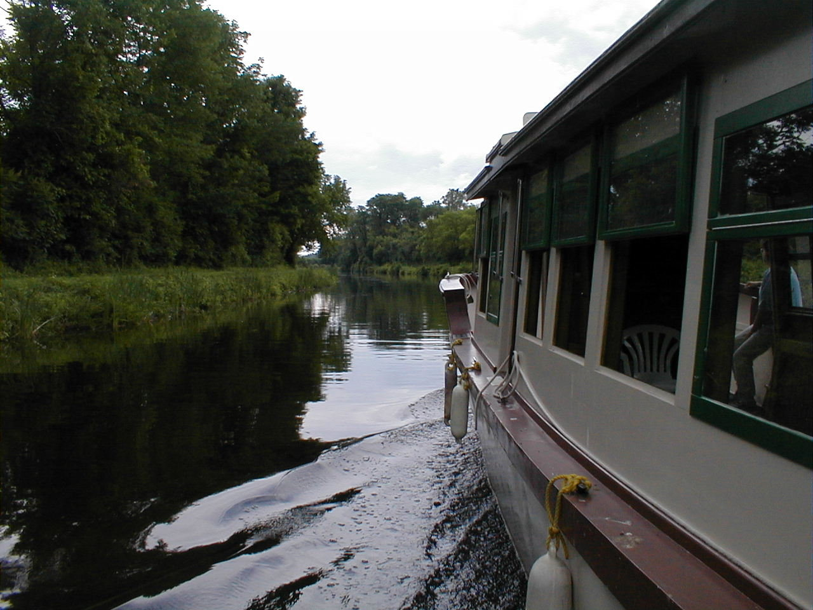

Day 43: June 24, Canandaigua, NY to Syracuse, NYPrevious Day - Home - Next Day Photo of the DayThe boat ride down a section of the Erie Canal. Keegan's LogDay 43: June 24, Canandaigua, NY to Syracuse, NY Mileage: 62.92 milesWeather: Warm, Mostly sunny, Light variable winds Vertical Climb: 1500 feet Riding Time: 4:00 Toady was a world apart from yesterday, the partly cloudy skies and a high in the 80s were a welcome blessing. Less distance, less climbing, no rain, and no headwind, what more cyclist ask for? We felt less rushed today, we had more time to go see the sights and take our time than in the past few days. All in all, a great day. There were a few residual flats this morning, both Karen and Lynn had a flat in the first mile. My front tire went at about 6 miles out, a small rock this time. I got it going again pretty soon, the front is the easiest to change. No sooner had we gotten on our bikes when dad called out 'flat!', so we stopped on the other side of the yard to change his back tire. After an explosion on the first attempt, we were rolling again, now about a half hour behind the rest of the group. We rode through a few nice little towns on the finger lakes. Waterloo was at about 25 miles, it was the birthplace of Memorial Day, American flags flew form almost every building. We reached the only sag at 38 miles but took only a brief stop. The sag marked the 3,000 mile point of our journey, only 400 miles to go. I had another flat just after the sag, this one required a whole new tire (that's 17 in case anyone's counting). We stopped in Camillus for lunch, I had a ham and cheese sub so big I couldn't close it, had to use a knife and fork. We stopped at the Erie Canal park and took a short boat ride down the canal. While it's mostly dry now, the canal used to be 70 feet wide, 7 feet deep, and 350 miles long, and was dug entirely by hand. The trip ended at what used to be an aqueduct, where the canal crossed over a river. The aqueduct had long since rotted away, but soon it will be restored to lengthen the section of restored canal from 1 to 2 miles. We went left for the hotel from the park, our Holiday Inn is basically in the middle of nowhere. At route rap Chuck announced that he is out of the flat tire pool, if JJ can go the distance without a flat then he wins the jackpot. Dinner was downstairs, yet another buffet. Tomorrow we ride to Little Falls, an 84 mile day with even less climbing than today. The weather looks good, only 5 riding days to go. Phil's LogShort day today, only 62 miles. But it didn't start well. Lynn flatted immediately on leaving the motel, and I doubled back to buy her a new tire. I screwed up my cyclometer (speedometer), losing my accumulated total. Keegan flatted not many miles later, and by that time we were pretty much behind the pack. His tire fixed, we hopped back on our bikes and my rear tire was flat. I changed tube and tire because I had had enough hassle at that point, inflated the new pair, and they went off like a cherry bomb. I was sure all of New York State, sleeping in on a Sunday morning, was awakened. "Damn bicyclists" I could hear muttered everywhere. I didn't have my tire seated on the wheel right. We were WAY behind then. Things got better. The day threatened rain, there were always stormy looking dark clouds to the northwest, but they never matured and added only suspense. The countryside was pretty, farms with fields of oats, festive little towns, Waterloo was the birthplace of Memorial Day. There was a car rally, an occasional finger lake, and beautiful white and stormy clouds that added excitement without the real danger. The policemen were nice to us, the roads smooth with wide shoulders, Sunday traffic light. At one point, Keegan, who was a hundred or so yards behind me, disappeared. I rode with Diane who is a little slower thinking that he would catch up. He didn't, so I stopped, ate the apple I had carried in my shirt for 30 miles, and waited. No Keegan. So I started pedaling west looking for him, and found him about ten minutes later. He had flatted, and did in tire and tube. Worse, he was riding now on one of those red racing tires with slick sidewalls that had caused his spill in Arizona. A few miles further there was a flapping noise coming from his bike - it was the paper thin tread PEELING off that tire and hitting his brake caliper. We made it, slowly, to the hotel with no further incident. I bought him a new tire, and we have some tube patching to do tonight. The tour is winding down. We all still love to swap stories. Chuck Brumley, our author and storyteller flatted today, and declared "I'm toast!" He's out of the famed no flat tire pool, and if JJ doesn't flat, he wins. JJ still has his original Armadillos and the question is, will the tire not wear through before the road runs out? Suspense. But all are feeling a sadness because the tour is coming to an end. There was joking about doing it again next year, all of us, as a reunion ride; but none will. |
{kind=link}